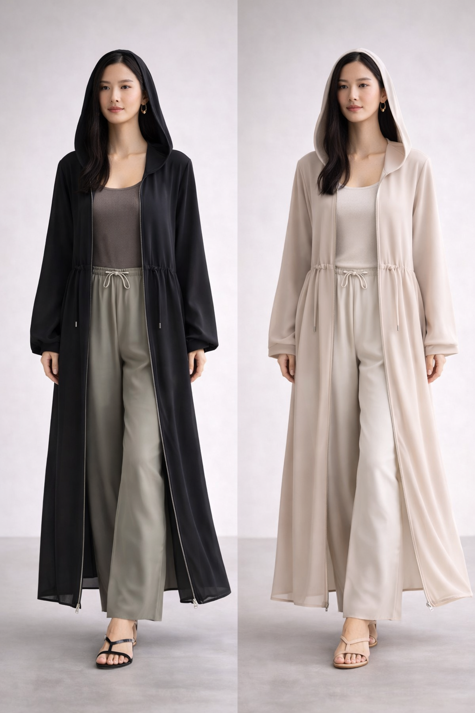
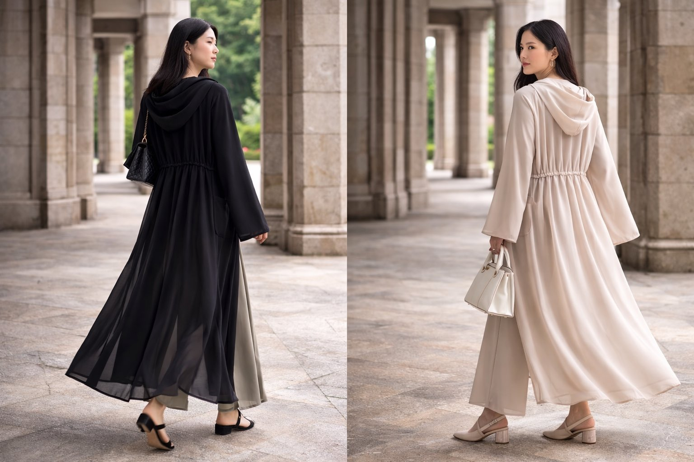
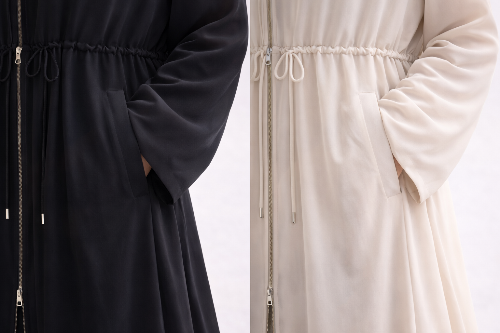

日陰衣（HIKAGEGI）
静かに、日差しを遮る。あなたのための設計
価格 ¥12,000（税込・送料無料）
初回生産 50着限定
初回生産記念：先着50名様 5%オフ
クーポンコード：FIRST50
Add to Cart
静かに、日差しを遮る。あなたのための設計
価格 ¥12,000（税込・送料無料）
初回生産 50着限定
初回生産記念：先着50名様 5%オフ
クーポンコード：FIRST50
Add to Cart

日差しを遮るためではなく、
自分の境界を定義するためのガウンです。
軽やかな生地が、肌にまとわりつかず、静かに空間をまとう。
フードで光をやわらげ、長い袖が外界を覆い、
ポケットとシルエットは動きを妨げることなく、体の自由を守ります。
在り方のための設計です。

静かに守る設計
深めのフード / ダブルジップ / 軽量素材 / 深めのポケット

気付けば、これを選んでいる
★★★★★
上下ジッパーの服がなかなかないので助かります。またシルエットが超エレガントです。欲しかったのになかったのがようやく手に入りました！
— SASHA
★★★★★
自転車移動にちょうどいいです。生地も思ったより軽くて、暑い日でも着やすいです。2着目買いました。普段使いに最適です。
— 東京都 60代
★★★★★
軽くてとても快適です。フードが深く、顔まで日陰になるので夏でも安心して外を歩けます。
— 東京都 40代
★★★★☆
ダンスの行き帰りにも、ウォームアップにも体をカバーできてちょうど良いです。両開きなので着脱も簡単でヘアメイクが崩れなくてよい！
— 千葉県 20代
S：150–165cm
M：165–180cm
※標準サイズ設計
ゆったり：通常サイズ
すっきり：ワンサイズ下
モデル：170cm / M着用
日差し・熱・ほこりから肌を守る全方位プロテクトウェア。
軽量で動きやすく、日常・移動・屋外に適応。
ベトナムより発送
到着目安：10〜14日
Stripe決済
Visa / Mastercard / Amex / JCB
Apple Pay / Google Pay
hikagegi.contact@gmail.com
販売事業者：HIKAGEGI
運営責任者：SUZUHA TAKAGI
所在地：※請求があった場合開示
メール：hikagegi.contact@gmail.com
販売URL：https://hikagegi.carrd.co
個人情報は信頼の一部として扱います。
配送・連絡・サービス向上のため使用。
© HIKAGEGI